( /ˈnē/ || [niː] )
Merely an aesthetically pleasing combination of four letters with an available gTLD.
Michael works on, in, and with bottom-up, self-organised, and decentralised structures related to the fields of art and technology.
🖳 Code♡ Community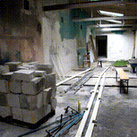
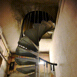
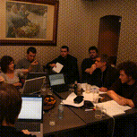
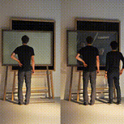
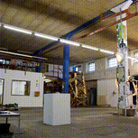
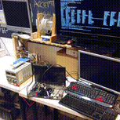
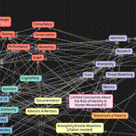
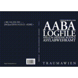
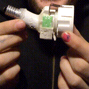
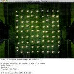
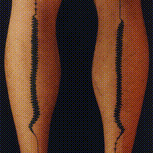
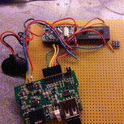
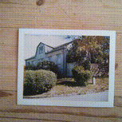
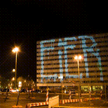
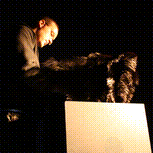
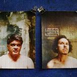
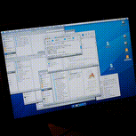
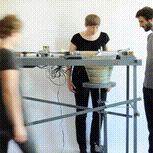
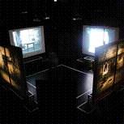
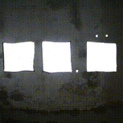
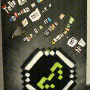
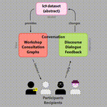
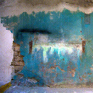
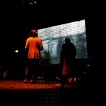
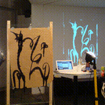
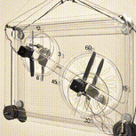
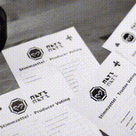
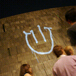
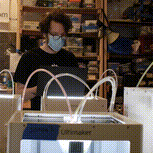
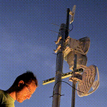
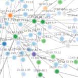